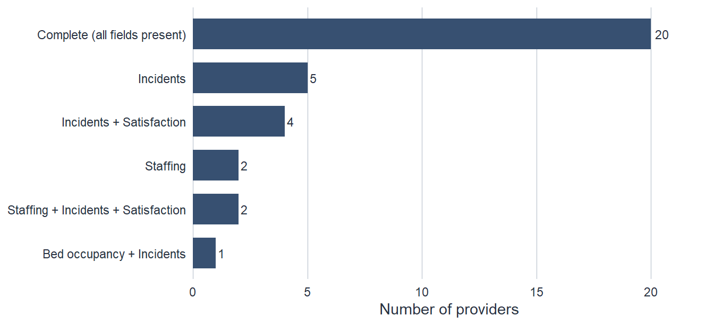

![A horizontal plot of estimated mean provider satisfaction on a scale from about 68 to 78, with a dashed vertical line marking the true average near 72. Three estimates are shown as points with horizontal 95 percent confidence-interval bars. 'Near-complete returns' sits very close to the dashed line with a narrow interval that covers it. 'MCAR – random non-response' also sits close to the dashed line but with a wider interval that still covers the truth. 'MNAR – lower scorers silent' sits well to the right near 75 to 76 with an interval of ordinary width that lies entirely above the true value, showing a confident estimate of the wrong number.](08-missing-data-foundations_files/figure-html/fig-bias-vs-precision-1.png)
8 Handling Missing Data: Foundations
8.1 When the Value Isn’t There
Some missing data is waiting in every real dataset, and regulatory data is no exception. Providers do not submit returns; surveys go unanswered; a system fails to record a field; a member of staff never fills one in. The chapters so far have quietly assumed the numbers were all present and correct – a histogram drawn, a standard deviation calculated, an unusual value investigated, and most recently an estimate carried from a sample to a conclusion with its uncertainty attached. This chapter takes away that assumption and asks what to do when part of the picture is simply not there.
The instinct, faced with a gap, is to reach for something to fill it – an average, a last known value, a plausible guess. Resist it. The single most important thing to understand about missing data is that the gap itself carries information, and the first job is to read it. Why is this value absent? A figure missing because a server rebooted at 3 a.m. is a different problem from a figure missing because the provider it belongs to would rather you did not see it. The two gaps look identical in the spreadsheet – an empty cell, an NA – and call for opposite responses. Everything in this chapter follows from telling them apart.
So the question is not “do I have missing data?” – you do – but “does it matter for the question I am asking?” Sometimes a handful of absent values changes nothing of consequence. Sometimes a pattern of absence is the most important thing in the dataset. The work of this chapter is learning to tell which situation you are in before you decide what to do, and to be honest in your reporting about what the gaps allow you to claim. The computational machinery – visualising patterns at scale, multiple imputation, sensitivity analysis with code – is referred to a later chapter on computational methods for missing data. Here the work is conceptual: a way of thinking that keeps you from the two cardinal errors, filling a gap you should have read and ignoring one you should have filled.
8.2 Why Data Goes Missing
Not all missingness is equal, and the differences are not about how much is missing but about what the missingness depends on. In 1976 Donald Rubin set out a classification that has organised the field ever since: three missingness mechanisms, distinguished by whether the chance of a value being absent is tied to nothing, to things you can see, or to the very thing you cannot. The names are a regrettable piece of statistical jargon – two of the three contain the word “random” and mean quite different things by it – so hold on to the underlying question in each case rather than the label.
A value is missing completely at random (MCAR) when its absence has nothing to do with anything – not with the value itself, not with any other variable, observed or not. A server drops two per cent of records at moments unrelated to which records they are; a monitor fails on whichever patient happens to be next; you deliberately survey a randomly chosen half of providers and leave the other half blank by design. Under MCAR the values you do have are a fair, if smaller, sample of the values you wanted: the providers with complete data look, on average, just like the ones without. This is the benign case, and it is also the rare one. True randomness is uncommon in administrative data, because absence almost always relates to something – an older system, a smaller team, a busier week. Note the qualifier on the survey example: missingness by design is MCAR only when the selection is genuinely random. The moment a design leaves data blank according to a provider characteristic – send the long form only to large providers, sample more heavily in one region – the missingness depends on something you can see, and it is no longer MCAR. Treat MCAR as a useful idealisation to measure reality against, not a description you should expect to fit.
A value is missing at random (MAR) when its absence depends on things you have observed, but not – once those are accounted for – on the missing value itself. This is the mechanism whose name does the most damage, because MAR data is precisely not missing at random in the everyday sense. Smaller providers might be less likely to return a particular metric; older respondents less likely to finish a survey; certain regions habitually late. In each case the gaps are patterned, but the pattern runs through something you can see – size, age, region – and within each group the missingness is as good as random. The practical promise of MAR is that the information needed to correct for the gaps is sitting in your own dataset: if you account for the variables the missingness leans on, you can recover an unbiased picture. The practical catch is that you can never be quite sure you have caught them all.
A value is missing not at random (MNAR) when its absence depends on the missing value itself, even after you have accounted for everything you can observe. The provider with a high incident count is the one that does not submit incident data; the patient with the poor experience is the one who abandons the satisfaction survey; the service with the awkward cost figure is the one that withholds it. Here the gap is informative in a way you cannot reach – the reason a value is missing is bound up with how large or small or troubling it would have been, and no amount of looking at the data you have can tell you by how much. MNAR is the mechanism that should worry a regulator most, and it is exactly the one that regulation is most likely to produce, because the incentive to not report is often strongest where the unreported number is worst.
Three mechanisms, then, with a clean logical ladder between them: MCAR depends on nothing, MAR on what you can see, MNAR on what you cannot. Two cautions keep this from hardening into something it is not. The first is that the data itself can carry you only partway up that ladder, a limit worth being precise about. The second is that these three labels, useful as they are, compress a richer story into a single word – a shorthand it pays to look behind once the stakes of the distinction are clear.
These categories are not academic taxonomy. Each carries a different consequence for your analysis, and the consequences come in two kinds that are worth keeping firmly apart.
8.3 Two Kinds of Harm: Bias and Precision
Missing data can hurt an analysis in two distinct ways, and confusing them is one of the commonest mistakes in this whole area. One harm is a loss of precision; the other is bias. They are not degrees of the same thing – they are different failures, with different cures, and a single estimate can suffer one, the other, or both.
The cleanest way to hold them apart is to picture estimation as archery. Building on the inference chapter’s estimates and confidence intervals, think of an estimate as an arrow loosed at a target, with the true value as the bullseye. Precision is how tightly your shots group: a precise estimator lands its arrows close together, an imprecise one scatters them. Bias is whether the group is centred on the bullseye or pulled systematically to one side. The two can be independent. You can have a tight group well off-centre, or a loose group centred on the gold. Missing data can do either – widen the scatter, shift the aim, or both – and the cure differs in each case.
Losing precision means your estimate becomes more uncertain. Throw away the incomplete records and you are working with a smaller dataset; a smaller dataset gives a wider confidence interval, less power to detect a real difference, a blurrier picture. The aim is still true – the arrows still cluster around the bullseye – it is simply a less steady hand. Every kind of missingness costs you precision, MCAR included, for the unavoidable reason that you have less data than you set out to collect. The cost is honest, in the sense that the wider interval openly admits how much less you now know.
Bias is the more dangerous harm, because it is dishonest: the estimate becomes systematically wrong – consistently too high or too low – while often looking perfectly confident about it. If the providers who fail to report incidents are the ones with the most incidents, then the average you compute from those who did report is not a slightly fuzzy estimate of the true average; it is a precise estimate of the wrong quantity, the average among the well-behaved. And here is the trap that catches people: a biased estimate does not announce itself. Its interval is an ordinary width – set by how many records survived, not by how far the aim has slipped – so it looks no different from a sound one; it simply sits in the wrong place and fails to cover the truth. The hallmark of bias is an estimate that is confidently mistaken, and the width of the interval cannot expose it: width tells you how steady the aim is, never whether it is pointed at the right target.
So the two harms map cleanly onto what the mechanisms do – though it is worth being careful with the verb, because a mechanism does not cause anything on its own; what does the damage, or avoids it, is the handling you choose in its light. Under MCAR there is no intrinsic risk of bias to begin with, because the cases you keep are a fair sample; the only cost is precision. Under MAR, bias appears if you ignore the observed variables the missingness leans on, and disappears if you account for them – the bias is real but removable, and removing it is your job. Under MNAR, bias survives every routine method, because the correction would need the missing values themselves; the most an honest analysis can do is bound it or report it. The figure below puts all three on one scale.
Carry the distinction with you, because it shapes every decision that follows. When you reach for a method to handle missing data, ask which harm you are trying to undo. If the missingness is MCAR and your only loss is precision, there is no bias to fix and the honest move may simply be to proceed with the smaller dataset and report the wider uncertainty. If there is bias, precision is the lesser worry: a sophisticated method that recovers a little precision while leaving the bias untouched has polished the wrong problem. And the regulatory stakes attach to both. Lost precision makes a genuinely failing provider harder to detect – it raises the false negative rate, the graver kind of regulatory mistake. Bias does something worse: it can make a whole sector look better, or worse, than it is, and quietly mislead the decisions that rest on the analysis.
8.4 Investigating Missingness
Because the mechanism cannot be read off a percentage, there is no shortcut threshold to lean on. “More than ten per cent missing, drop the variable” is the kind of rule that feels rigorous and decides nothing that matters: five per cent of MNAR gaps can bias an analysis badly, while thirty per cent of genuine MCAR gaps costs only precision. So the work is investigation, and it runs in four movements, from what the data shows you to what only a human can tell you. The thread that ties them together is a single posture: stop treating the gaps as nuisance to be cleared away and start looking at them, the same way you would look at the values themselves.
Quantify it first. How much is missing, and where? Not just the headline proportion but its distribution: which variables carry the most gaps, how many records are missing several fields at once, and – the question that earns its keep in regulation – whether certain kinds of provider are missing more than others. A single overall figure hides everything interesting. Missingness concentrated in one variable, or one type of provider, is the first hint that you are not in the benign MCAR case. (One caution that the methods chapter takes up in earnest: software often disguises missingness as a code rather than a blank – a 9, a 999, an “unknown” category – so a dataset that reports zero missing values on real-world data deserves suspicion, not relief.)
Look at the pattern. Numbers summarise; a picture reveals. The plainest picture is a map of the gaps: providers down one side, the metrics they should return across the other, every absent value shaded in. Scattered evenly, the way MCAR would leave it? Or clustered – in particular records, particular periods, particular providers?
![A grid with 36 provider rows and six columns – bed occupancy, staffing level, incident reports, complaints, waiting times, satisfaction survey – with each cell either pale (recorded) or strongly coloured (missing). The recorded cells dominate the lower two-thirds. Toward the top a cluster of rows has several coloured cells, and the incident-reports column has the most coloured cells overall, with staffing and satisfaction the next most affected. The colouring concentrates in particular rows and particular columns rather than scattering evenly across the grid.](08-missing-data-foundations_files/figure-html/fig-missingness-map-1.png)
Do certain variables always go missing together, hinting at a shared cause such as a single unfiled return? Counting how often each combination of fields is absent answers that directly, and the answer is usually that gaps travel in bundles rather than singly.

These shapes – the clustered map, the bundled patterns – are the visual fingerprints of non-random mechanisms. A bar chart of co-missing fields like the one above is the simple cousin of the upset plot that the chapter on computational methods for missing data will draw at scale; the same chapter shows how to produce these maps and pattern summaries straight from a dataset, in R and Python. The point of meeting them here is to fix the habit before the tooling: a percentage tells you how much is missing, but only a picture tells you whether the missingness has a shape worth worrying about.
Relate it to what you can see. This is the step that tests, as far as anything can, where on the mechanism ladder you stand. Mark each record as missing or not on the variable of interest, and compare the two groups on everything else you do hold. Do the providers with missing satisfaction scores differ from the rest in size, region, sector, or rating? If they look the same on every observed characteristic, MCAR becomes more plausible. If they differ – smaller providers, say, far more likely to have gaps – then the missingness is at least MAR, and you have just identified the variable you will need to account for. And if the gaps cluster among providers with known risk factors – open complaints, past enforcement, a poor previous rating – then the warning light for MNAR is on, because the missingness is tracking the very thing you were trying to measure. But be clear about where this step stops. It can show that missingness depends on what you observed; it can never show that it depends only on what you observed. The last leg of the judgement always rests on assumptions and domain knowledge, because the defining feature of MNAR is precisely that the information you would need to detect it is the information you do not have.
Ask why. No statistic completes this step; you complete it by talking to the people who own the data. A gap can mean a system migration, a changed reporting requirement, a metric that simply does not apply to this provider type (which is not missing data at all, but a category to handle separately), a return that exists but has not yet arrived – or a deliberate choice not to submit. These causes sit at different points on the mechanism ladder, and you usually cannot tell which you are facing from the numbers. Sometimes the right response is to augment the data – link other records, pull a related field, bring in an external source that plausibly explains the gaps and shifts a suspected MNAR problem onto observed ground where you can handle it. That is often exactly the right move, and worth real effort. But it has a limit, and past it sits a judgement call no dataset can make for you: at some point you have to ask the people who know the service what the silence most likely means, and write down the answer as an assumption. Metadata, data managers, and the regulatory context – is submission mandatory, and what follows from not submitting? – are what turn a guess about the mechanism into a defensible judgement. The discipline of writing that judgement down, with its reasons, is part of the quality assurance that any proper analysis owes its readers.
What the four movements give you is not a verdict the data has signed off on, but an honest, evidence-backed reading of the mechanism – and a reading is often enough to choose proportionately what to do next.
8.5 Deciding What to Do
The mechanism you have argued for, together with how much is missing and how high the stakes are, points to one of a small number of responses. They escalate, from the light-touch default to the move that reframes the whole analysis. The table sets them side by side; the prose that follows walks the escalation.
| Strategy | When it is reasonable | What it costs or risks |
|---|---|---|
| Complete case analysis (listwise deletion) | The missing slice is small and plausibly MCAR; complete cases resemble the full set on everything you can see | Loses precision; introduces bias under MAR or MNAR; silently changes the sample behind each table unless you report it |
| Single imputation (mean, median, mode, or last value carried forward) | A trivial gap, or a rough exploratory pass you will not act on | Treats a guess as a fact: shrinks the standard error, overstates confidence, and distorts the distribution and the relationships between variables |
| Stratify, adjust, or weight on observed variables | Missingness looks MAR and the variables it leans on are ones you hold and can put in the model | Only as good as the MAR assumption and the variables you chose; any residual MNAR bias survives untouched |
| Multiple imputation | MAR with useful auxiliary information; a high-stakes estimate worth doing properly | Needs the right model and care; done casually it misleads as confidently as single imputation; computational – see the methods chapter and reach out to the Guild |
| Maximum likelihood (model-based) | The same MAR territory; a principled alternative to imputation | Specialist tooling; tied to a specific model of the data |
| Sensitivity analysis / treat the pattern as the finding | Substantial or MNAR missingness; whenever the mechanism cannot be settled | Yields a range or a referral rather than one tidy number – and that honesty is the point |
When the missingness is minor and plausibly MCAR – a few per cent, scattered, with the missing and complete cases indistinguishable on everything you observed – the honest response is usually the simplest. Complete case analysis – also called listwise deletion – means working only with the records that have no gaps, and under MCAR it is unbiased: you lose a little precision and nothing else. The price of admission is transparency. Report the sample size before and after exclusion, state why you judge the missingness benign, and check quickly that the complete cases really do resemble the full set on the characteristics you can see. Done openly, this is not a fudge; it is the right tool for a small, well-behaved problem. What it is not is a default to apply silently, which is how it usually gets used: the most common failing in published work is not a bad imputation but a complete-case analysis nobody mentioned (and the fact that most statistical packages have this behaviour implemented as a default for certain analyses also does not help).
When the missingness is moderate and looks MAR – patterned, but through variables you hold – the task is to use those variables so the pattern stops biasing the result. You might analyse the affected groups separately and combine them, include the variables the missingness leans on as adjustments in your model, weight the complete cases to stand in for the missing ones, or impute the gaps with a method that draws on the observed information. The first three are within reach of routine analysis; the fourth, multiple imputation done properly, is the substance of the computational methods chapter and, for a high-stakes result, a good moment to involve the Guild or the Practice Lead. Whatever you choose rests on the assumption that the missingness really is MAR – that the variables you adjusted for were the ones that mattered. State that assumption plainly, because if the truth is MNAR the bias survives every one of these methods.
One thing this stage rarely makes obvious is that the same missingness, left unhandled, can do very different damage depending on the method you feed the data into. A handful of gaps that barely shift a simple average can pull hard on a model that leans on the joint behaviour of many variables at once – a regression with several predictors, a latent-variable or item-response model, a time series. As analysis moves onto that more advanced terrain, do not reach for a general rule of thumb; check instead whether the specialist literature has studied your particular combination of method and missingness, because for many of them it has, and the findings rarely transfer. Beyond the few standard cases, there is no substitute for patience, domain expertise, and a serious attempt at sensitivity analysis.
When the missingness is substantial, or tangled up with the outcome itself – a large fraction gone, concentrated among providers you have other reasons to worry about – the right response is to stop reaching for a statistical patch. There is no method that recovers an unbiased estimate from MNAR data without assumptions you cannot check, and pretending otherwise launders a serious problem into a clean-looking number. The honest path forks. You can bound the answer with a sensitivity analysis, asking what your conclusion would be under the best and worst plausible stories about the missing values, and reporting the range rather than a false point. And you can take the step that, in regulation, is often the most important of all: stop treating the missingness as an obstacle to the finding, and recognise that it is the finding.
Across all four responses runs one constant: document what you found and what you did. For any analysis that will be acted on, record how much was missing and where, what mechanism you judged most likely and on what evidence, which handling you chose and why, and – the part most often skipped – what it all means for the confidence a reader should place in your conclusions. That record is not bureaucratic overhead; it is what lets the next person see the choices you made and trust, or challenge, the result. Missing data is one of the clearest places where a defensible analysis and an indefensible one differ not in their methods but in their honesty about the gaps.
8.6 Where Missing Data Leads
This chapter has stayed deliberately conceptual: it offers a way of thinking about absent values, not a procedure to run. The frame – read the gap before filling it, tell the three mechanisms apart while remembering they summarise a richer process, separate bias from lost precision, investigate before handling, and in regulation treat systematic absence as a finding – is the foundation the rest of the book builds the machinery on.
It sits where it does for a reason. The inference chapter taught you to estimate a quantity from a sample and to carry honest uncertainty alongside it; this chapter took away the comfortable assumption underneath that work, that the sample was the one you meant to collect. The two ideas combine in the warning that runs through everything above: a single filled-in guess quietly lies about your uncertainty, shrinking the very confidence interval that was supposed to tell the reader how much to trust the number. That is why imputation has to be done carefully rather than casually, and why the honest goal is a valid estimate with honest error bars, not an accurate prediction of values that are gone for good.
The machinery is next door, in the chapter on computational methods for missing data, which turns these ideas into reproducible work: making disguised missingness visible, drawing the maps and patterns at scale, and carrying out the multiple imputation and sensitivity analyses sketched here in R and Python. The discipline of recording the assumptions and choices that missing-data handling forces on you belongs to QA principles, the next chapter, which makes the documentation this chapter keeps asking for into a standard you can hold an analysis to. And the habit underneath all of it is one this part of the book keeps returning to, whether the subject is an unusual value or an absent one: look at what the data is doing, ask why it is doing it, and decide on the evidence – never reach for the convenient fix because a gap is inconvenient.